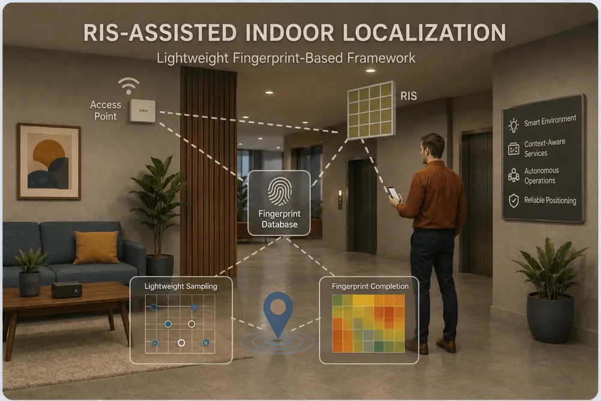

Lightweight RIS-assisted Localization for Indoor Intelligent Wireless Systems
A lightweight fingerprint-based framework that uses a small number of configurable RIS patterns to locate devices indoors, where GPS is unavailable.
Accurate indoor localization is increasingly important for intelligent wireless systems, as smart environments, context-aware services, and autonomous indoor operations rely on reliable position information. Indoor localization remains challenging due to severe multipath propagation, blockage, dynamic obstacles, and the absence of GPS coverage.
This project investigates how reconfigurable intelligent surfaces (RISs) can enable practical and efficient indoor localization. Instead of relying on explicit path separation or high-complexity geometric parameter estimation, it adopts a lightweight fingerprint-based framework that directly exploits location-dependent wireless responses under a small number of configurable RIS patterns.
The research focuses on improving fingerprint discriminability among nearby locations and reducing offline radio-map construction cost through lightweight sampling and completion methods.